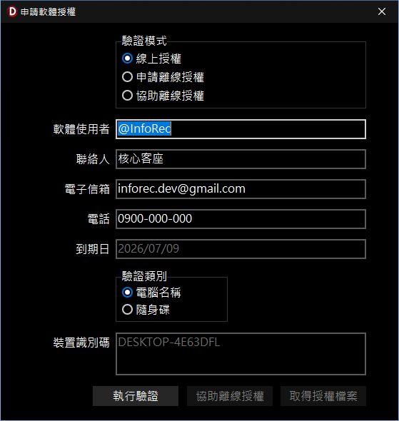

申請註冊
本功能用於申請 InfoRec 免費註冊與續約。試用期間實際列印滿 10 張即可免費註冊一年，之後每年列印滿 30 張即可免費續約。註冊條件與完整流程請見免費註冊說明。

申請註冊視窗
欄位說明
-
驗證模式
- 「線上註冊」：電腦可以上網、有 Solana 錢包的使用者，在註冊網頁連接錢包並簽署一段文字即可完成，不轉帳、不扣款。
- 「離線註冊（寄申請檔）」：沒有錢包或電腦無法上網時使用。系統產生申請檔，請寄到 inforec.dev@gmail.com，由我們代辦註冊。
- 「代辦註冊」：供協助他人註冊的代辦者使用，一般使用者不需選擇。
-
申請資料
- 「註冊名稱」：註冊後顯示在主畫面標題，並寫入授權碼；註冊後如要更改，需重新註冊。
- 「聯絡人」、「電子信箱」、「電話」：作為聯絡的依據，只提供給開發者，不會公開。註冊後，電子信箱 @ 前面的文字會作為您自行設計文件的作者暱稱。
-
裝置綁定
- 「到期日」：目前試用或註冊的到期日。
- 「驗證類別」：選擇將註冊綁定於本機的「電腦名稱」，或外接的「隨身碟」。
- 「裝置識別碼」：系統自動讀取並顯示所選裝置的識別碼。
-
使用進度
- 顯示試用或註冊的到期日、剩餘天數與已印張數（已印 x／10 張或 x／30 張）。
- 只計算實際送到印表機的頁數 × 份數；預覽、列印成 PDF 等虛擬印表機不算。
- 張數不夠時「送出申請」無法按下，並提示還差幾張；續約在到期前 30 天才開放申請。
按鈕說明
- 「送出申請」：資料確認無誤後按下，依「驗證模式」執行：
- 「線上註冊」：開啟引導頁。在這台電腦註冊請按「在這台電腦開啟註冊頁」；用手機註冊請以 IRVault App 或手機相機掃描 QR Code。在註冊網頁連接錢包、簽名完成後，回到「軟體授權與啟用」按「執行驗證」，再重新啟動 InfoRec。
- 「離線註冊（寄申請檔）」：產生申請檔
Reg_*.txt 並開啟所在資料夾，請將檔案寄給我們。
- 「協助離線授權」、「取得授權檔案」：代辦者使用，一般使用者不需操作。
注意事項
- 網路版（多台電腦共用伺服器資料庫）與 CheckIssue 目前不開放網頁註冊，請來信由我們代辦。
- 以線上註冊完成的錢包，可在 IRVault App 選單「領取 IREC」領取 IREC 點數（用來記錄使用與貢獻，與付款無關）。